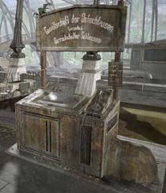

| 概要 | 地図 | |
| 淡いヒント集 | ヒント集 | 的確なヒント集 |
| 攻略最短ルート | Syberia 攻略へ |
| << 前の段階へ | 地域選択へ | 次の段階へ >> |
バロクシュタット
駅に停泊した船
 ・船が泊まっている。これを利用すれば問題を解決することとができるかもしれない。 ・もし、何か船員に頼みたければ、彼らの要求をのまなければならない。
駅にある装置
 ・この装置は何か? 制御パネル以外にも、看板も調べるべきだ。 ・とにかく、いろいろと調べるべきであろう。どこが操作できるか、何が見えるかなどである。 ・この装置が何か調べるには、電話するのが手っ取り早いだろう。 ・電話から聞こえる音声は、ちゃんと最後まで聞くべきだ。時には重要なことも話すだろう。
カラクリ人形の建物にある扉
 ・なぜ開かないのだろうか? 手順が間違っているのだろうか。 ・よく扉を見てみよう。黄金の物体が乗っていることで、針が傾いている。 ・針が傾き、左右にものを乗せるものといえば、いったい何だろうか?
大学の学長達
 ・彼らは何を要求しているだろうか? ・彼らは何かを隠していないだろうか? ・彼らは何を知っているだろうか? ・彼らから知りたいことがあれば、ねばり強く尋ねるべきだ。何かを知りたければ、不本意でも彼らの指示に従うことも重要である。 |
| << 前の段階へ | 地域選択へ | 次の段階へ >> |
| 概要 | 地図 | |
| 淡いヒント集 | ヒント集 | 的確なヒント集 |
| 攻略最短ルート | Syberia 攻略へ |
Syberia
| 目次へ戻る | ページの上部へ |